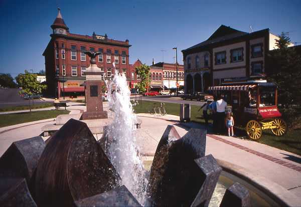

“Charming” is the first word that comes to mind when you enter downtown Northfield. The streets are lined with historic buildings filled with locally owned shops and cafes. A pedestrian bridge crosses the rushing Cannon River where it cascades over a dam. Stately houses and big churches adorn the hills above downtown.
A thriving city center usually indicates a community with vitality, and Northfield is no exception. It is home to two well-regarded colleges, Carleton and St. Olaf, which provide jobs, youthful energy and an endless selection of concerts, lectures, art shows and sporting events. Both colleges pride themselves on their environmental awareness, evidenced by the two wind turbines that generate electricity for the schools. At St. Olaf, the dining service buys locally grown food, including produce from a student-run organic garden.
Northfield residents have access to plenty of good food. A farmers market is open three days a week from May to October. And there’s Just Food, a small but beautiful natural food co-op downtown that carries a full selection of organic foods, plus produce, dairy and meats from area farms. Behind the food store is the Northfield Community Mercantile, which carries organic gardening supplies, organic bedding and other eco-friendly items.
Northfield residents frequent the Cannon River for recreation - canoeing, kayaking and fly fishing are local favorites. Hiking and cross-country skiing are popular in the Carleton arboretum and at two nearby parks, River Bend Nature Center and Nerstrand Big Woods State Park. Of course - this being Minnesota - there are plenty of places to ice skate and play hockey.
Northfield’s major employers are the two colleges, with about 1,500 employees combined, followed by the Malt-O-Meal breakfast cereal factory, with about 800 employees. But Northfield is only 40 miles from Minneapolis and St. Paul, and is rapidly becoming a bedroom community for people who commute to the Twin Cities.
The city’s slogan is “cows, colleges and contentment.” Although the cows are in decline as the human population increases, the colleges are thriving, and Northfield has an air of prosperous contentment that’s quite unusual for a town this small.
Do you live in Northfield? Have you visited? Please post your comments below.
Population: 18,567
County: Rice
Climate: pleasant springs and summers; exquisite autumns; cold winters
Cost of living index: 111.5
Median home price: $231,700
Alternative energy: net metering and renewable energy incentives
Don’t miss: Carleton College’s Cowling Arboretum, which has 880 acres of prairie and forest with 10 miles of trails.
|
 JOHN ELK III Visit downtown Northfield in the summer and you can enjoy fresh popcorn beside a bubbling fountain. |
|
|